Trzy narzędzia, każde od wejścia na stronie głównej do wyniku i koszyka, zrzuty z telefonu. To wersja testowa sklepu (lokalna, 10.11.2026): ceny i dotacje liczy prawdziwy silnik, nic nie jest zamawiane naprawdę.
„Czy Twój falownik współpracuje z magazynem?”
Co już wiemy: Zdjęcie tabliczki to tabliczka testowa wygenerowana przez nas. Prawdziwa, krzywo sfotografowana tabliczka nie była jeszcze sprawdzana.
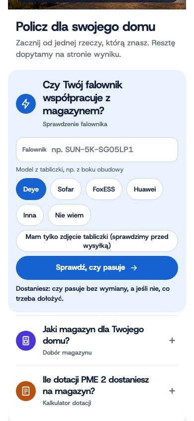
Front: klient wybiera markę falownika (Deye) i dotyka „Sprawdź, czy pasuje”. Dziś przycisk prowadzi do strony z opisem narzędzia, a w sklepie zaczyna się od kroku falownika w doborze.
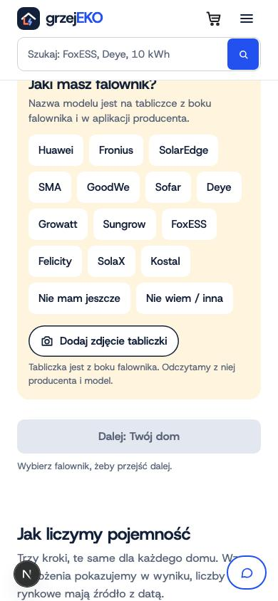
Dobór, krok falownika: lista marek i przycisk „Dodaj zdjęcie tabliczki”.
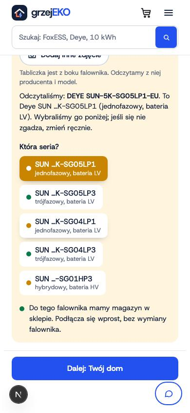
Klient robi zdjęcie tabliczki. Odczyt: producent i model, seria zaznacza się sama. Pod listą werdykt: czy do tego falownika mamy magazyn.
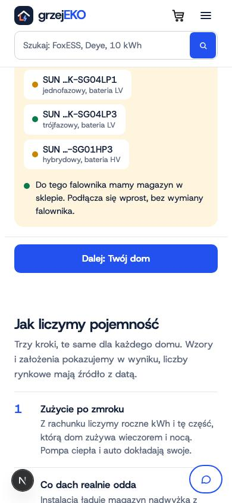
Werdykt dla falownika z tabliczki.
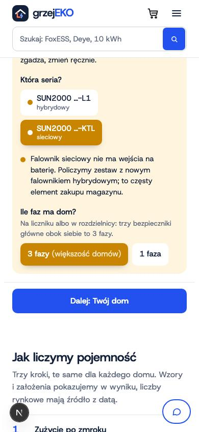
Inny przypadek: Huawei sieciowy (bez wejścia na magazyn). Co mówi sklep.
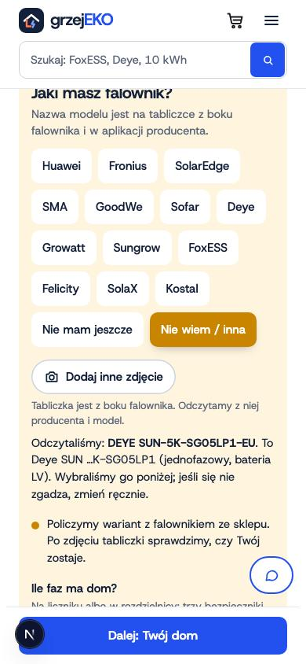
Przypadek „Nie wiem / inna”: co mówi sklep.
„Jaki magazyn dla Twojego domu?”
Co już wiemy: Front przekazuje rachunek w adresie, ale dobór jeszcze go nie czyta: klient zaczyna od zera. Do wdrożenia (punkt 5 listy blokad).
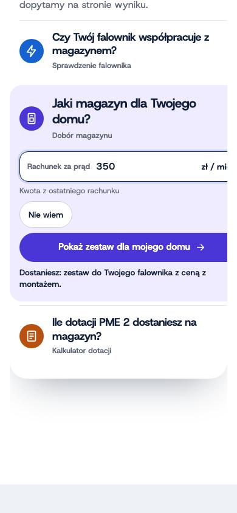
Front: klient wpisuje rachunek za prąd (350 zł/mies.) i dotyka „Pokaż zestaw dla mojego domu”. Dziś sklep nie czyta jeszcze rachunku z adresu: klient zaczyna dobór od początku.
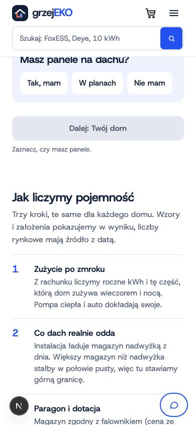
Dobór, ekran 1: panele i moc.
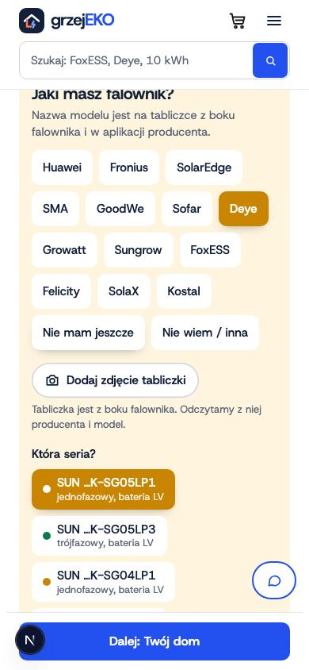
Moc 6 kWp, falownik Deye SG05LP1: zielona kropka przy serii = mamy magazyn.
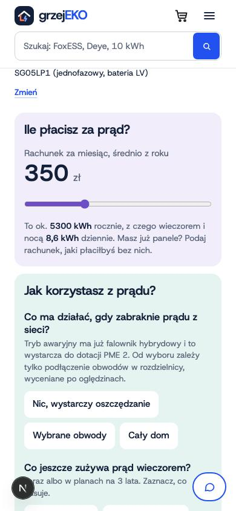
Ekran 2: rachunek, zasilanie awaryjne, pompa lub auto, rozliczenie.
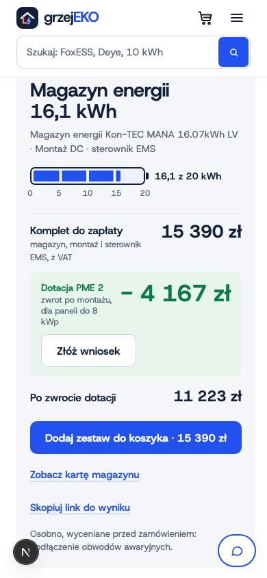
Wynik: zestaw z ceną, dotacją i przyciskiem koszyka.
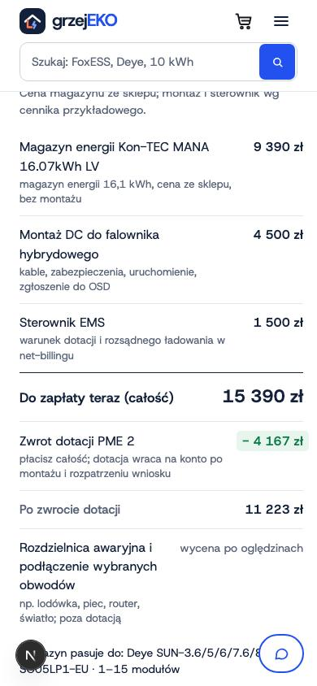
Wynik: rozpiska kosztu.
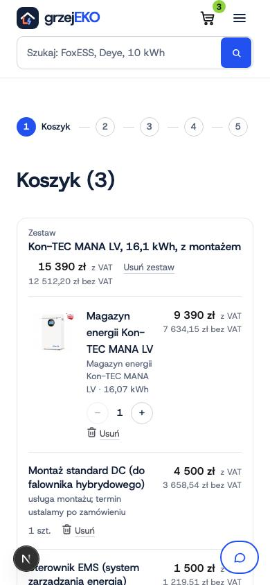
Koszyk po „Dodaj zestaw”: czy kwota w koszyku = kwota na przycisku.
„Ile dotacji PME 2 dostaniesz na magazyn?”
Co już wiemy: Znalezione przy nagrywaniu: kalkulator podpisuje montaż jako „cena przykładowa”, a od 07.11 montaż DC ma cenę realną 4 500 zł (w doborze jest dobrze). Do poprawy po testach.
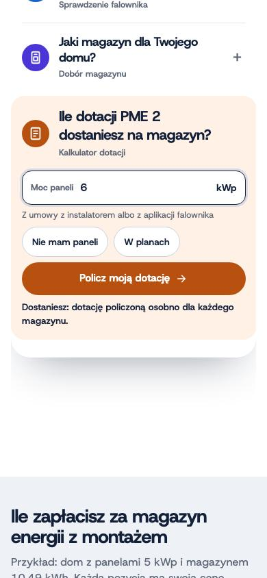
Front: klient wpisuje moc paneli (6 kWp) i dotyka „Policz moją dotację”. Kalkulator w sklepie czyta moc z adresu (?kwp=6).
Kalkulator po wejściu z frontu: krok 1, rozliczenie i moc paneli.
Krok 2: falownik hybrydowy, marka i model.
Krok 2: marka Deye i model SG05LP1 z listy (tu też jest „Zdjęcie tabliczki”).
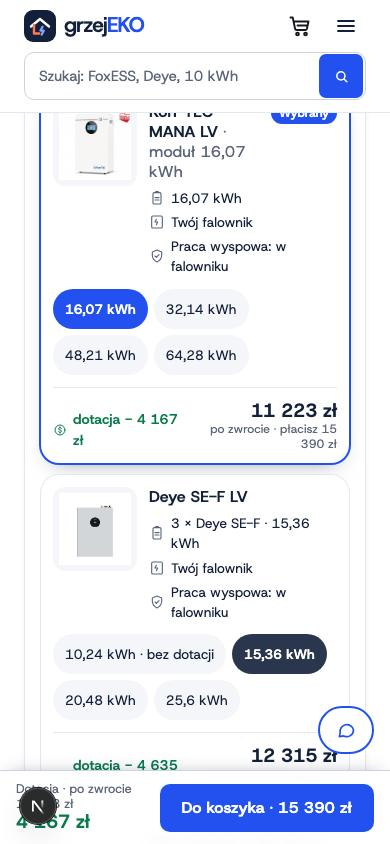
Krok 3 i 4: magazyn i montaż.
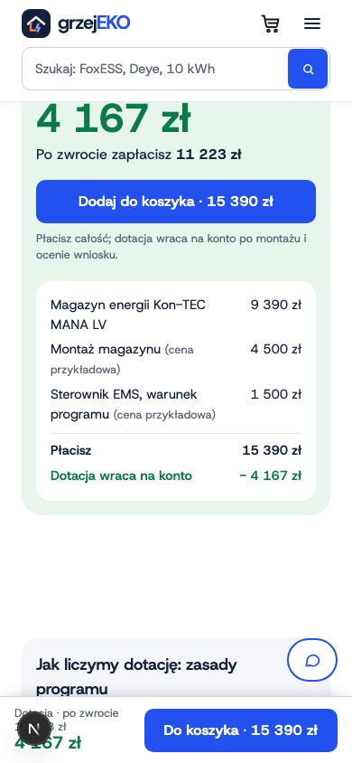
Wynik: kwota dotacji i cena po zwrocie.
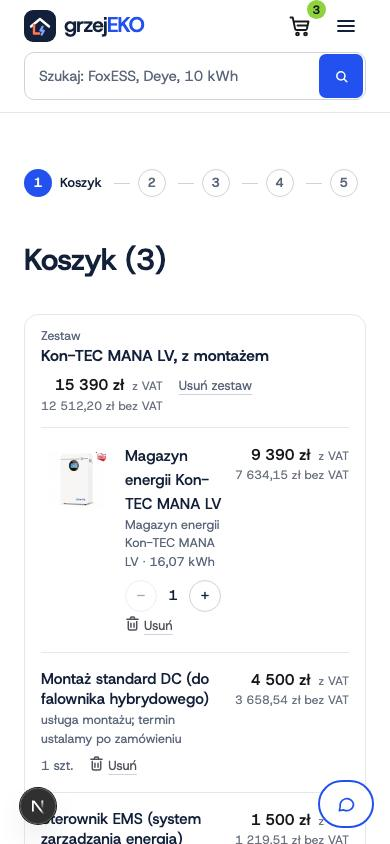
Koszyk po „Do koszyka” z kalkulatora.